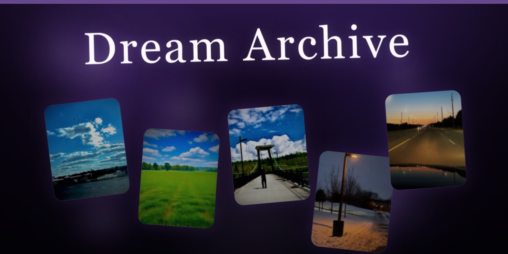
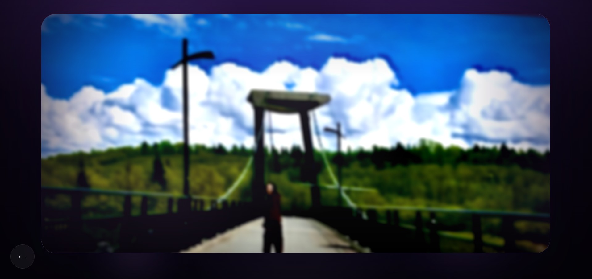
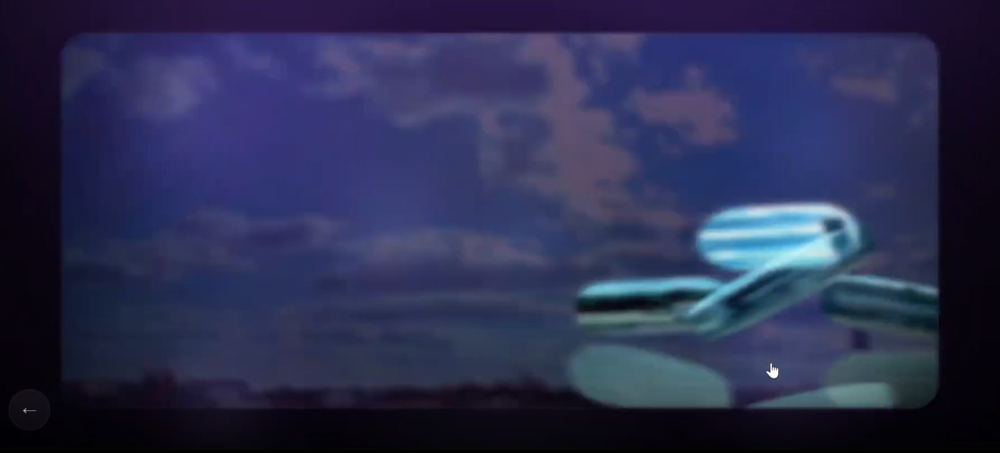

Interactive Web-Based Artwork
Dream Archive
Dream Archive is an interactive web-based artwork that explores fragmented memory through drifting landscape images that blur, distort, and shift like unstable dreams.
Dream Archive is an interactive website that explores the unstable nature of memory through a collection of dreamlike landscape images. The project presents familiar environments such as skies, bridges, and open fields as fragments rather than fixed places, allowing them to shift, blur, and distort as viewers move through the archive. These visual transformations reflect the way memories change over time and resist being clearly preserved.

Project Overview
The work is structured as a sequence of dream entries that can be explored intuitively rather than in a fixed order. Each entry responds through motion, distortion, and atmospheric overlays that create the feeling that memories are overlapping or dissolving into one another. Rather than presenting a clear narrative, Dream Archive focuses on mood, perception, and interaction, treating the website itself as a memory space rather than simply a container for images.
2026
Interactive website
HTML, CSS, JavaScript, p5.js
Desktop web browser
Explore the Project
Selected Views

